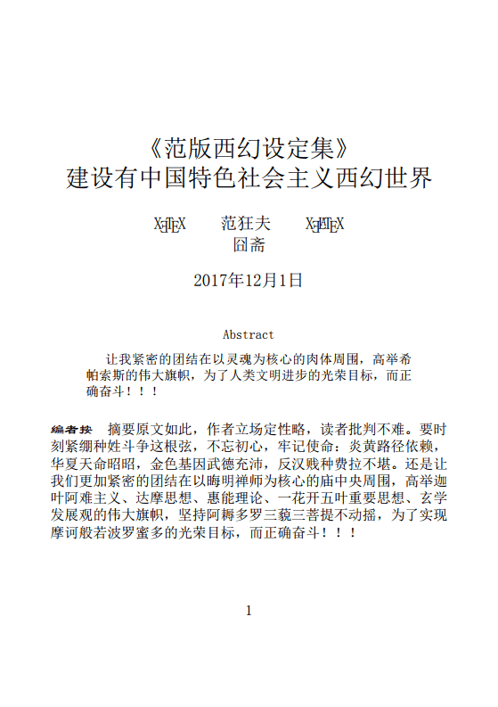

恶补开工之前，需要一些准备工作，于是把这几天经历简单罗列一下。
在11月28号凌晨发布了标志《范版西幻设定集》结合当前正文进度的注释之革命任务胜利收工的「了却一桩心事 」，晚上把十年前旧文《囧斋随笔》整理后发布，于29日凌晨写了「说明（零） 」作为总结，里面提到了我中华兲朝上国学术史相关内容，于是又「政治敏感 」了。所以发牢骚：
胡宏 也「政治敏感 」，王夫之 也「政治敏感 」，但凡有点骨气的都「亦当删去 」，那叫嚣着「惟楚有才」的这帮逗哔还剩下啥？
然后学渣我并没闲着吖，虽然新时代中国特色社会主义大好形势下繁荣的中文互联网上知识极大丰富并且自己日理万机无暇周览，但还是于百忙之中抽出了宝贵的时间，作出了高瞻远瞩算无遗策的战略部署，发扬踏石留印抓铁有痕的大无畏反革命乐观主义精神，恶补计划正在蹄疾步稳的大力推进中。
在29号晚上，打开那尘封已久的盘阵，查看以前下载的电子书。截止到2011年我在某文学站点呼吁广大网友应该尽量把所有带宽都用于下载书籍资料然后家里eMule再也连不上服务器为止，收集的好东西不少，数学相关电子书就有一百多个G，软件工具及其它资料更是体积庞大。
但是，贪多嚼不烂，运用我中华兲朝上国那发达的文学传统当中丰富的修辞伎俩形容就是：
盖闻十步之内，必有芳草。千里之行，起于足下。是以临渊羡鱼，不如归而结网。
知周万物，理不胜私。思通神明，泽不济众。岂物近而身远，抑天易而人难。此犹千里之明，蔽生遐睫。秋毫之察，莫睹舆薪。是以学止修身，尚不愧于屋漏。惠知为政，乃勿剪其甘棠。
众擎易举，任重则勿支。兼程可几，道远则勿及。是以一龟曳尾，无奈过隙之驹。群豕鸣哀，不救崇朝之宰。
好逸恶劳，中材之故态。宴安酖毒，前哲之危言。是以运甓高斋，以无益为有益。力田下潠，以靡暇为长间。
绳墨诚陈，不可欺以曲直。规矩诚设，不可欺以方圆。是则金生水，镆耶待炉冶之功。木在山，梁栋藉斧斤之用。
故君子虚心以假物，尊贤而定法。
所以，既然按部就班恶补首先从「老三篇」开始，并且「至少恶补五遍」也需要一遍一遍的来吖。于是，眼下就没必要「上穷碧落下黄泉」「上九天揽月下五洋捉鳖」企图行万里路足迹踏遍地球村到处探险打怪升级顺便搜罗学阀秘笈什么的。已经下载的内容当中，就有若干活跃学霸反复推荐的经典教材，包括但不限于我中华兲朝上国并不发达但是奋起直追的数学传统当中以汉字为载体的境内合法出版物。
总之，发现手头收藏足够，老三篇恶补三遍也来得及，啊，放心了。但是，电子版用来泛读尚可，精读会很不方便，况且开着电脑没准还会分心。于是决定，周末行十里路去旧宅把实体书当中关于老三篇的那些拿过来，然后查缺补漏，可能还会买几本。
不过呢，说过了直接提到教材、作者、出版社，会被认为是政治站队，于是略过。市面上常见的教材以及配套的学习指导、指南，很明显有山头痕迹，数学圈（juàn）内都知道，不解释。我就是先都大概翻翻，找套适合学渣当前水平（差不多忘光了也）以及既定目标的看完了再换下一套。
到了11月30号，开始准备学习环境了。这个「环境」，就是科技昌明民智大开的当代，计算机与互联网普及之后，为生活带来极大便利但并未给人民带来幸福的那些软件。硬件暂时用不着，老迈年高的台式机还能再撑一段时间。
顺便，之前几天忽然发现七年多以前买的老迈年高笔记本，开机时出现「Fan error」然后再也无法启动，前一次启动还是正常。然后，翻出十年前买的更加老迈年高的笔记本，虽然勉强可以启动，但是2GB内存到头了，已经无法运行当代最新科技成果了也。
而与此同时，新时代中国特色社会主义大好形势下繁荣的中文互联网上出现两条消息：
Intel使用Minix魔改版作为硬件管理工具，可实现用户只要插电联网即便不开机也可于地球对面伸出一根小指头（点一下鼠标）就让地球这边「对力量一无所知」的贱种屁民知道什么是「秩序」。
陈冠希 感慨全世界只有自己的硬盘能修好。
所以，在这里需要解释一下准备的「环境」都有些什么内容，以便使得有志于永垂不朽的数学工作者和数学爱好者做好充足的反对内外敌人并于斗争中壮烈牺牲的思想准备。
首先就是「表达方式」，解释过了这「ℵ0 」规模的信息是我认定的人类思想的「封印 」，在突破封印遥遥无期的情况下，还是要尽可能提高效率。
既然涉及数学，那么肯定免不了有一大堆公式。常见办公软件就有「公式编辑器」之类功能，包括但不限于「Microsoft Word」。但是，用起来有两个问题：一个是作为偶尔出现的场合尚可凑活，不过对于出现大量公式的典型的数学语境，就显得效率低下。另外一个更是对于恶补计划的极大威胁，那就是「可视化」的编辑公式需要鼠标键盘的频繁互动，会导致思路中断注意力转移。
其实还有更深层次的考虑，也涉及了深刻的政治和意识形态原因。就算自己已经写出来长篇大论《范版数学恶补记》，那么怎么发布呢？并非所有站点都支持包含大量公式的专业内容展现，这只是技术原因。并且，并非所有站点的天灵盖都可以无视来自把持相关内容出版领域的垄断学阀的狼牙棒的威胁，这就是政治和意识形态原因。
本位面的先例就是美帝灯塔卫生部门于1961年建立的生物学预印本系统，于1967年在「学术圈juàn 」以及「学术出版圈juàn 」的多方围堵两面夹攻之下钦定死路一条。而直到上世纪90年代计算机和互联网开始大发展之后，众所周知的「arXiv.org 」才出现，并且至今运转良好。
如果只看技术问题，那么W3C已经制定了「MathML」规范，目前几乎所有主流浏览器都可以正常显示，虽然编码文本出于语义严格的目的而繁琐，但是内容的编辑可以使用软件实现，并不会给作者增加太多负担。只不过，站点出于安全原因考虑，通常不会允许普通用户上传「MathML」之类可「内嵌到HTML」的内容。
于是，现实情况我们都看见了，包括但不限于维基百科在内的若干有需求的站点，接受使用「LaTeX」语法表达的数学内容，其实这也是涉及数学内容的实体出版界的惯例。具体到知乎，前一阵还看见若干活跃学霸奔走相告「公式编辑器更新了」，再早则是抱怨「公式编辑器真难用」，看来站方还是有诚意的嘛。
接下来就是政治和意识形态问题了。我在包括但不限于某文学论坛、某ACG论坛、某体育站点的其它站点的帐号都「被打翻在地再踏上一只脚永世不得翻身 」了，发言内容也「亦当删去 」了。那么，我在包括但不限于知乎在内的提供公式编辑功能的站点发布，会不会也遭到同样的待遇呢？就看之前「政治敏感 」那么多次也知道，不好说吧。
因此，还要优先考虑「本地存储」的实现，那么解决方案呼之欲出了：弄个TeX环境，哪怕仅仅用来输入数学公式。而我作为应用数学专业出身的学渣，年轻的时候还是用过LaTeX的，还有点印象和过时的经验。于是，准备的「学习环境」当中，率先考虑选择「TeX发行版」。
于是，运用包括但不限于某搜索引擎的搜索引擎，查询了许多内容，终于弥补了约二十年的代沟。当前已经流行XeTeX了，直接支持Unicode和本地字体，用XeLaTeX直接写文档就能顺利编译，不再是当年CCT预处理的时代了。而发行版，TeX用户组官方的「TeXLive」就很好，开源、免费、每年更新，今年到了2017版。于是下来一套，安装倒是一路畅通，就是时间长了点，等了后半宿。
然后，发现TeXLive发行版自带一个可视化编辑器「TeXworks」，功能足够。不过其它TeX用户和爱好者，推荐了更多功能更强的选择。于是，继续查询，从中找了一个同样是开源免费的「TeX Studio」下载，安装，确认正常。
再然后就是「直接使用中文」并且排版的相关实践了，这一点与当年经验相差甚大，包括但不限于某些命令都变了，如「documentstyle」变成「documentclass」。这时候，网上出现的各种经验技巧，就需要甄别了也。因为并非专业出版界从业人员，也不需要自己的文章多么美观大方，所以那些使用自定义宏包实现并且被官方不推荐使用的方案就没有选择，包括但不限于「xeCJK」。并且由于一贯的极简主义风格原则，希望代码越简洁越好。
总之，摸索一段时间之后，成功搞定。以《范版西幻设定集》为例，代码如下：
\documentclass[12pt, a5paper]{article}
\usepackage{fontspec, xunicode, xltxtra, geometry}
\geometry{left=1.5cm, right=1.5cm}
\setmainfont[BoldFont=隶书, ItalicFont=楷体]{宋体}
\setsansfont[BoldFont=黑体]{幼圆}
\setmonofont{仿宋}
\XeTeXlinebreaklocale "zh"
\XeTeXlinebreakskip = 0pt plus 1pt minus 0.1pt
\title{《范版西幻设定集》\\ 建设有中国特色社会主义西幻世界}
\author{\XeTeX\qquad 范狂夫\qquad\XeLaTeX \\ 囧斋}
\date{2017年12月1日}
\begin{document}
\maketitle
\begin{abstract}
让我紧密的团结在以灵魂为核心的肉体周围，高举希帕索斯的伟大旗帜，为了人类文明进步的光荣目标，而正确奋斗！！！
\end{abstract}
\paragraph{编者按}
摘要原文如此，作者立场定性略，读者批判不难。要时刻紧绷种姓斗争这根弦，不忘初心，牢记使命：炎黄路径依赖，华夏天命昭昭，金色基因武德充沛，反汉贱种费拉不堪。还是让我们更加紧密的团结在以晦明禅师为核心的庙中央周围，高举迦叶阿难主义、达摩思想、惠能理论、一花开五叶重要思想、玄学发展观的伟大旗帜，坚持阿耨多罗三藐三菩提不动摇，为了实现摩诃般若波罗蜜多的光荣目标，而正确奋斗！！！
\end{document}
而效果是这样的：

XeLaTeX排版实践
接下来，「情商负无穷」并且刨根问底纠缠不休的我，发现一个问题：「在书名部分怎么输入副标题？并且与主标题字体字号不一致？」带着这个问题上网，深入搜，反复搜，持续搜……搜了好一阵也没有发现符合LaTeX语义结构规范的解决方案。暂且放下。
另外一个问题就是字体了，出现的六个名称并非手滑随便打字，而是有着深刻的政治和意识形态内涵。之前不久，就有使用「微软雅黑」制作内容发布的用户遭到方正起诉侵权并索赔的新闻。而媒体建议，除了第三方发布的各种免费字体之外，在系统自带字体当中，也就是年代久远无法追根溯源的那些字体可以放心使用，包括但不限于命名简单的宋体、楷体、黑体、幼圆、仿宋、隶书。
顺便，终于知道了「微软雅黑」代工外包找的是我中华兲朝上国知名团伙「方正」下属美术工作者了也。前面提到了，曾用帐号铁■无敌范中出 当中的黑色方块，在新时代默认字体当中小了一圈，作为「全角占位符」居然「撑不起场面」，让围观群众纷纷表示看这厮就不顺眼，可见字体设计者的逗哔之处。
到了这里，「环境」当中的「形式」问题已经解决，接下来是「内容」相关部分。
之前的注释中也提到了，因为课程安排，在学生时代并没有接触到微分几何与拓扑相关内容；并且由于设定集的背景，需要在古典几何基础之上发挥；然后就是出于信仰，曾提出了使用四维空间那无穷多种微分结构未必获得相同的结果之猜想，从而费拉不堪的天灵盖被武德充沛的当代主流物理价值观挥舞的天命昭昭的狼牙棒所威胁。
那么，既然设定与注释的重点和恶补的重点都已经放在几何之上，所以相关文章当中，肯定会出现各种图形。于是选择一个使用方便的数学作图工具的革命任务，又提到了日程之上。
这个问题，肯定很多数学工作者和数学爱好者都有了首选目标，包括但不限于知名且昂贵的Maple、Mathematica、Matlab等商业软件在内。确实这些产品很好用，也有着庞大的用户群以及完整的社区，互联网上可供参考的经验也是极大丰富，学渣我本人也都用过。只不过，那都是过去的事情了也，今后一段时间内，在「一箪食一瓢饮居陋室年中无休」的恶补过程中，当然没有经济能力支付使用成本嘛。
接下来又是带着这个问题上网，深入搜，反复搜，持续搜……结合代沟之前的经验，终于搜到了若干适合自己的解决方案。
之前曾经提到过，本来有计划基于「Maxima」山寨「Mathematica」，这段发言还是建立在尚未与时俱进的过时经验之上。在重新开始跟上时代的过程中，发现早就有觉悟甚高的数学工作者为了打破资本把持的学术垄断而不懈奋斗。奋斗的成果就是「Sage」，通称「SageMath」，是整合了已经出现的几乎所有广泛应用的开源免费数学工具包，以「Python」为媒介，开发的「免费开源数学套餐」。
这个「SageMath」是B/S架构，也就是可以在浏览器当中运行，所有处理任务由服务器承担。这种架构，适合机构，包括但不限于教育机构。最新版本8.0，虽然有Windows下的安装程序，但是放在了github上，境内无法访问。而境内可以访问下载的，还是以虚拟机形式运行的映像。于是，在12月1日这一天，下载一套简单体验了一把。
然后，考虑到当前正在使用的硬件老迈年高，担心无法承担本机负载，于是再接再厉，继续寻找「套餐」以外的零星解决方案。而对于其它用户来说，可能更担心钦定红客无处不在，动辄钦定死机，于是仍然惦记着在单机环境下自力更生艰苦奋斗自己动手丰衣足食吧。
这次寻找本来是从「TeX Studio」引起的，为了使得十年前笔记本还能发挥余热，准备找个需求较低的Linux版本，发现「TeX Studio」可以在「xubuntu」下运行，就去搜索相关内容。只不过很遗憾，TeXLive的需求不那么低，估计还是跑不起来。而我也不想在配置环境上消耗太多时间，从上面的选择也可以看出，都是找最简单的默认配置即可工作的方案。
但是呢，「TeX Studio」为了跨平台，使用了「Qt」库，这也是看到之初奇怪为啥提供了「xubuntu」版本而没有「Kubuntu」版本的原因。后来得知，因为商业应用不广泛不深入，「Kubuntu」已经转入社区开发，而没有商业支持了也。不过，这并不是说「KDE」项目的终止，KDE团队仍然在按部就班的开发当中，只是几个主要的分支项目均有自己的计划和日程，发布未必同步罢了。
然后，就找到了「KDE教育」项目当中的一个应用：「康托」（Cantor）。这个应用是个前端，后端可以配合一堆开源的数学工具，其中也包括「Maxima」在内。并且「KDE教育」项目当中还有互动平面几何软件「Kig」和数学函数绘图「KmPlot」，也是在一定程度上适合既定计划的。
就是说，如果出于种种原因需要把工作迁移到Linux之上，为了码字与恶补计划的目标也应该首选KDE环境。这也是以前提到过的，KDE之下的应用看上去整整齐齐像是正规军，而Gnome之下则杂七杂八类似散兵游勇。更何况基于「Qt」开发，会直接使用Qt的特性，比「GTK+」要先进一些。比方说，之前（若干年）看到业内抱怨，说在移动平台上Qt可以做到分辨率无关，而GTK+还只能按照像素布局，于是导致了商业选择向着什么倾斜之类。
由此而来的话题，就是那些在地球村各种豪门贵种之间存在大量关系户的钦定学霸，恐怕会因为家庭原因而选择商业软件，同时以「一分钱一分货」之类我中华兲朝上国民间至理名言谆谆教导一代又一代娱乐至死の逗哔，顺便嘲笑我等贱种屁民。那么，它们估计首选还是苹果机加上Mathematica或Maple吧，毕竟macOS基于BSD，有完整的Unix环境，对于「科学计算」要亲切一些。并且由于Maple已经被日本公司收购了，已经充分日化，对精日学霸来说更加亲切吧。
如果从理性客观中立的角度观察，十年前至少七年前，恐怕我也会选择日版Mac OS X加上日化版商业软件。至于原因更简单，因为语种代码页的缘故吖。总有星辰大海党一厢情愿的认为西方发达国家习惯于动辄惊呼兲朝不可战胜于是方方面面都为兲朝用户考虑。这一点，在应用范围更窄的专业软件当中体现得最明显，不仅几乎没有「汉化」工作，就连内容都经常出现乱码。
所以，通过广泛比较（比较过程可参考「关于输入法」的随笔）之后认定，对于默认使用UTF-8编码的macOS，对于已经日化到可以使用日语内容而没有明显障碍的软件，接受中文也是顺理成章而不至于发生故障。以前也说过了，中文输入法的各种功能与接口，明明是从微软为了日本用户而开发的那些功能和接口移植过来的，用不上的也有，不好用的也有，兲朝天命昭昭时期也照样凑活用吧，爱用不用。
回到「内容」话题，考虑了这么久，最终还是没有确定结论。因为，三种主要的商业软件和若干开源软件，使用的语言之语法都各不相同，想要切换则需要学习成本，而我最不希望的就是增加任何会阻挠恶补计划的不必要时间精力成本。并且，一旦选择一种之后就是站队，商业软件会涉及政治原因，开源软件则会涉及各种「不可抗拒的因素」，包括但不限于「有钱能使鬼推磨」「狼牙棒敲天灵盖」之类。
这么看来，也就是企图一统江山的「SageMath」使用「Python」最合适，到底后续乏力还是一飞冲天，还得看「华盛顿大学」背后学术山头所依靠的政治山头在接下来按照剧本由「众神」发动的「世界大战」当中是否可以幸存下来吧。
总之，按照「晚绑定懒求值」原则，这个话题还可以往后放一放。虽然「工欲善其事必先利其器」，但是还没到善其事的时间点。恶补之初还是传统的看实体书做实体题吖，这个阶段恐怕用电脑还会分心，除了记录恶补过程和码字之外。